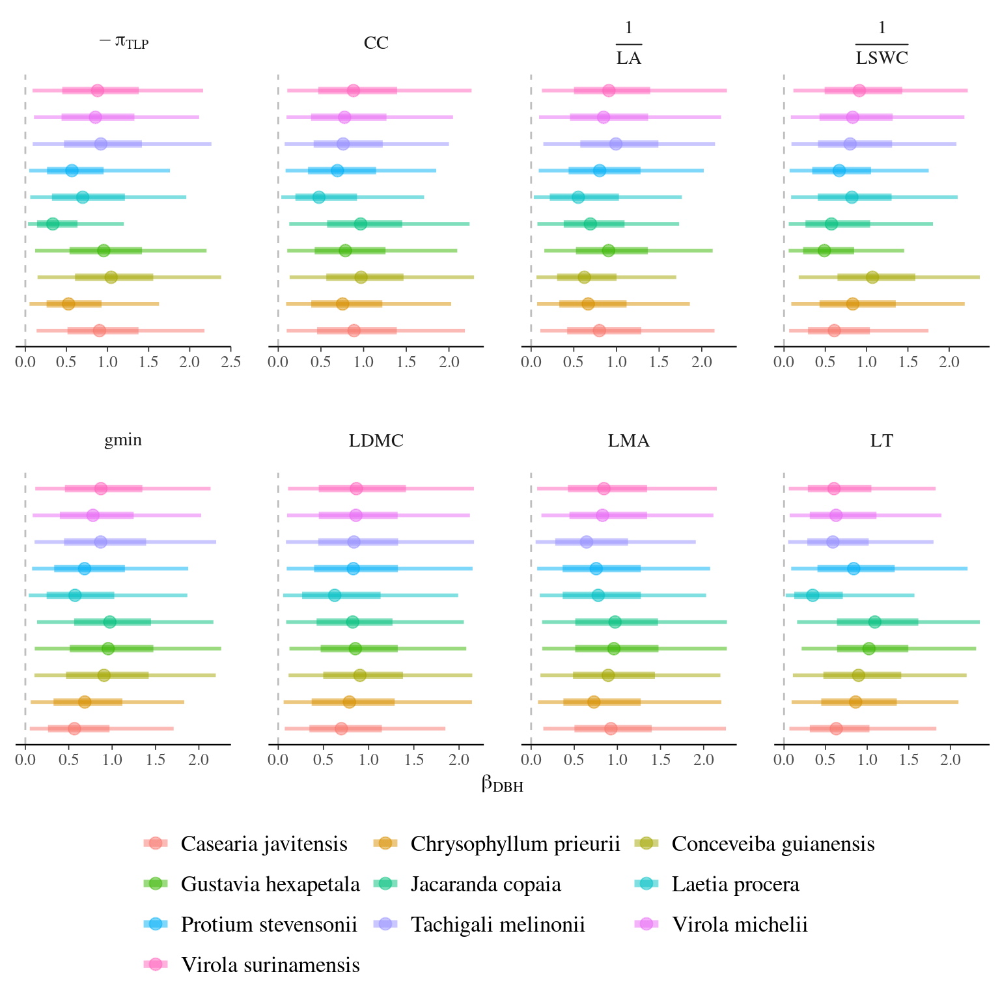
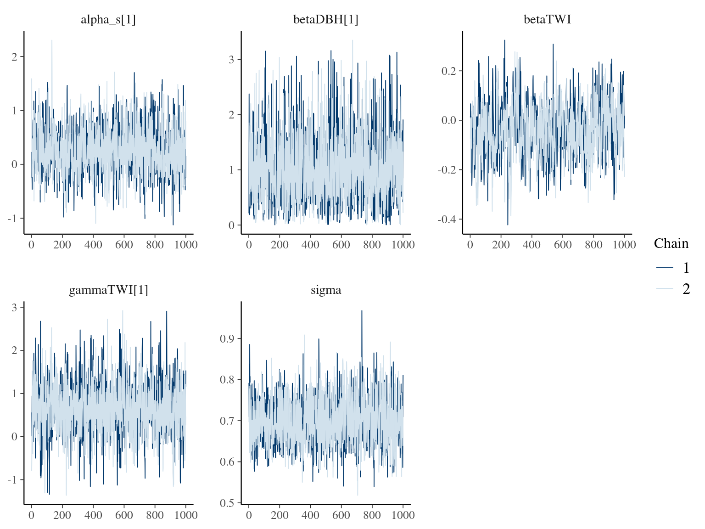

This book is in Open Review. I want your feedback to make the book better for you and other readers. To add your annotation, select some text and then click the on the pop-up menu. To see the annotations of others, click the in the upper right hand corner of the page
Chapter 6 Ontogeny and toporgaphy effects
The subsequent analysis aimed to graphically explore variations in leaf traits according to 4 descriptors: (i) tree ontogeny, (ii) abiotic environment, and (iii) phylogeny through taxonomic levels.
6.1 Intercept

Figure 6.1: Model species effect for Intercept.
6.2 DBH

Figure 6.2: Model species effect for DBH slope.
6.3 TWI

Figure 6.3: Model species effect for TWIs & TWIis slope.
6.4 Summary
| Trait | Species | \(\alpha_s\) | \(\beta_{DBH}\) | \(\beta_{TWI}\) | \(\gamma_{TWI}\) | \(\sigma^2\) |
|---|---|---|---|---|---|---|
| \(LMA\) | All | 0.018 | 0.998 | |||
| \(LMA\) | Casearia javitensis | 0.023 | 0.951 | 0.174 | ||
| \(LMA\) | Chrysophyllum prieurii | 0.465 | 0.767 | 0.438 | ||
| \(LMA\) | Conceveiba guianensis | -0.576 | 0.914 | 0.059 | ||
| \(LMA\) | Gustavia hexapetala | -0.437 | 0.945 | 0.263 | ||
| \(LMA\) | Jacaranda copaia | -0.248 | 1.003 | -0.055 | ||
| \(LMA\) | Laetia procera | 0.353 | 0.790 | 0.039 | ||
| \(LMA\) | Protium stevensonii | 0.561 | 0.739 | -0.006 | ||
| \(LMA\) | Tachigali melinonii | -0.670 | 0.646 | 0.008 | ||
| \(LMA\) | Virola michelii | -0.059 | 0.853 | -0.226 | ||
| \(LMA\) | Virola surimensis | 0.434 | 0.849 | 0.114 | ||
| \(LDMC\) | All | -0.049 | 0.918 | |||
| \(LDMC\) | Casearia javitensis | 1.117 | 0.732 | 0.475 | ||
| \(LDMC\) | Chrysophyllum prieurii | 0.200 | 0.824 | 0.609 | ||
| \(LDMC\) | Conceveiba guianensis | -0.562 | 0.959 | 0.224 | ||
| \(LDMC\) | Gustavia hexapetala | -0.785 | 0.837 | -0.136 | ||
| \(LDMC\) | Jacaranda copaia | -0.711 | 0.845 | 0.021 | ||
| \(LDMC\) | Laetia procera | 0.654 | 0.632 | 0.046 | ||
| \(LDMC\) | Protium stevensonii | 0.584 | 0.836 | -0.036 | ||
| \(LDMC\) | Tachigali melinonii | 0.860 | 0.855 | -0.239 | ||
| \(LDMC\) | Virola michelii | -0.182 | 0.801 | 0.134 | ||
| \(LDMC\) | Virola surimensis | -0.219 | 0.891 | 0.058 | ||
| \(LT\) | All | 0.079 | 0.782 | |||
| \(LT\) | Casearia javitensis | -1.297 | 0.672 | 0.303 | ||
| \(LT\) | Chrysophyllum prieurii | 0.235 | 0.854 | -0.400 | ||
| \(LT\) | Conceveiba guianensis | -0.606 | 0.844 | 0.155 | ||
| \(LT\) | Gustavia hexapetala | 0.098 | 1.038 | 0.172 | ||
| \(LT\) | Jacaranda copaia | 0.530 | 1.108 | -0.114 | ||
| \(LT\) | Laetia procera | 0.639 | 0.306 | -0.061 | ||
| \(LT\) | Protium stevensonii | -0.003 | 0.846 | -0.087 | ||
| \(LT\) | Tachigali melinonii | -1.340 | 0.584 | -0.332 | ||
| \(LT\) | Virola michelii | -0.938 | 0.650 | -0.704 | ||
| \(LT\) | Virola surimensis | 1.042 | 0.644 | 0.473 | ||
| \(\frac{1}{LA}\) | All | 0.040 | 0.705 | |||
| \(\frac{1}{LA}\) | Casearia javitensis | -0.705 | 0.847 | -0.272 | ||
| \(\frac{1}{LA}\) | Chrysophyllum prieurii | -1.042 | 0.631 | -0.459 | ||
| \(\frac{1}{LA}\) | Conceveiba guianensis | -1.412 | 0.602 | -0.040 | ||
| \(\frac{1}{LA}\) | Gustavia hexapetala | -0.619 | 0.873 | -0.452 | ||
| \(\frac{1}{LA}\) | Jacaranda copaia | 1.407 | 0.686 | 0.026 | ||
| \(\frac{1}{LA}\) | Laetia procera | -0.579 | 0.556 | -0.319 | ||
| \(\frac{1}{LA}\) | Protium stevensonii | 0.902 | 0.812 | 0.154 | ||
| \(\frac{1}{LA}\) | Tachigali melinonii | 1.521 | 1.042 | 0.019 | ||
| \(\frac{1}{LA}\) | Virola michelii | -0.270 | 0.888 | -0.185 | ||
| \(\frac{1}{LA}\) | Virola surimensis | -0.021 | 0.872 | 0.091 | ||
| \(CC\) | All | -0.004 | 0.835 | |||
| \(CC\) | Casearia javitensis | -0.520 | 0.885 | 0.319 | ||
| \(CC\) | Chrysophyllum prieurii | 0.984 | 0.733 | 0.079 | ||
| \(CC\) | Conceveiba guianensis | -0.395 | 0.993 | -0.351 | ||
| \(CC\) | Gustavia hexapetala | -0.958 | 0.812 | -0.223 | ||
| \(CC\) | Jacaranda copaia | 0.588 | 0.974 | -0.034 | ||
| \(CC\) | Laetia procera | 0.868 | 0.498 | 0.733 | ||
| \(CC\) | Protium stevensonii | -0.906 | 0.719 | -0.761 | ||
| \(CC\) | Tachigali melinonii | -1.009 | 0.755 | -0.064 | ||
| \(CC\) | Virola michelii | 0.557 | 0.727 | -0.457 | ||
| \(CC\) | Virola surimensis | 0.427 | 0.895 | -0.066 | ||
| \(\pi_{TLP}\) | All | -0.038 | 0.691 | |||
| \(\pi_{TLP}\) | Casearia javitensis | 0.267 | 0.882 | 0.650 | ||
| \(\pi_{TLP}\) | Chrysophyllum prieurii | 1.568 | 0.538 | -0.601 | ||
| \(\pi_{TLP}\) | Conceveiba guianensis | -0.020 | 1.075 | 0.084 | ||
| \(\pi_{TLP}\) | Gustavia hexapetala | 0.723 | 0.926 | -0.179 | ||
| \(\pi_{TLP}\) | Jacaranda copaia | -1.458 | 0.325 | 0.103 | ||
| \(\pi_{TLP}\) | Laetia procera | -0.109 | 0.675 | -0.870 | ||
| \(\pi_{TLP}\) | Protium stevensonii | 1.263 | 0.563 | -0.094 | ||
| \(\pi_{TLP}\) | Tachigali melinonii | 0.288 | 0.905 | 0.465 | ||
| \(\pi_{TLP}\) | Virola michelii | -0.626 | 0.836 | 0.244 | ||
| \(\pi_{TLP}\) | Virola surimensis | -0.585 | 0.868 | 0.044 | ||
| \(RWC\) | All | 0.018 | 1.010 | |||
| \(RWC\) | Casearia javitensis | 0.086 | 0.907 | -0.144 | ||
| \(RWC\) | Chrysophyllum prieurii | -0.617 | 0.799 | -0.080 | ||
| \(RWC\) | Conceveiba guianensis | 0.279 | 1.007 | 0.434 | ||
| \(RWC\) | Gustavia hexapetala | 0.407 | 0.924 | 0.067 | ||
| \(RWC\) | Jacaranda copaia | -0.758 | 0.924 | 0.097 | ||
| \(RWC\) | Laetia procera | 0.244 | 0.806 | -0.114 | ||
| \(RWC\) | Protium stevensonii | -0.063 | 0.791 | 0.140 | ||
| \(RWC\) | Tachigali melinonii | 0.460 | 0.887 | -0.230 | ||
| \(RWC\) | Virola michelii | -0.093 | 0.842 | -0.054 | ||
| \(RWC\) | Virola surimensis | 0.025 | 0.885 | 0.069 | ||
| \(\frac{Fm}{Fv}\) | All | 0.038 | 0.994 | |||
| \(\frac{Fm}{Fv}\) | Casearia javitensis | 0.618 | 0.772 | -0.241 | ||
| \(\frac{Fm}{Fv}\) | Chrysophyllum prieurii | -0.188 | 0.872 | 0.186 | ||
| \(\frac{Fm}{Fv}\) | Conceveiba guianensis | -0.343 | 0.935 | 0.240 | ||
| \(\frac{Fm}{Fv}\) | Gustavia hexapetala | -0.731 | 0.886 | 0.154 | ||
| \(\frac{Fm}{Fv}\) | Jacaranda copaia | 0.597 | 0.939 | 0.254 | ||
| \(\frac{Fm}{Fv}\) | Laetia procera | -0.308 | 0.809 | -0.199 | ||
| \(\frac{Fm}{Fv}\) | Protium stevensonii | -0.244 | 0.802 | 0.013 | ||
| \(\frac{Fm}{Fv}\) | Tachigali melinonii | 0.060 | 0.935 | -0.330 | ||
| \(\frac{Fm}{Fv}\) | Virola michelii | -0.356 | 0.793 | -0.467 | ||
| \(\frac{Fm}{Fv}\) | Virola surimensis | 0.242 | 0.866 | 0.099 | ||
| \(\frac{1}{LSWC}\) | All | -0.005 | 0.748 | |||
| \(\frac{1}{LSWC}\) | Casearia javitensis | 1.243 | 0.639 | 0.146 | ||
| \(\frac{1}{LSWC}\) | Chrysophyllum prieurii | 0.491 | 0.884 | -0.153 | ||
| \(\frac{1}{LSWC}\) | Conceveiba guianensis | -0.045 | 1.062 | 0.349 | ||
| \(\frac{1}{LSWC}\) | Gustavia hexapetala | -1.483 | 0.462 | 0.373 | ||
| \(\frac{1}{LSWC}\) | Jacaranda copaia | -0.930 | 0.580 | 0.003 | ||
| \(\frac{1}{LSWC}\) | Laetia procera | -0.523 | 0.792 | -0.312 | ||
| \(\frac{1}{LSWC}\) | Protium stevensonii | 1.303 | 0.653 | 0.257 | ||
| \(\frac{1}{LSWC}\) | Tachigali melinonii | 1.134 | 0.775 | -0.294 | ||
| \(\frac{1}{LSWC}\) | Virola michelii | -0.321 | 0.839 | -0.389 | ||
| \(\frac{1}{LSWC}\) | Virola surimensis | -0.223 | 0.898 | -0.021 | ||
| gmin | All | -0.009 | 0.773 | |||
| gmin | Casearia javitensis | -1.000 | 0.686 | -0.135 | ||
| gmin | Chrysophyllum prieurii | -1.233 | 0.631 | -0.364 | ||
| gmin | Conceveiba guianensis | -0.733 | 0.826 | 0.084 | ||
| gmin | Gustavia hexapetala | -0.451 | 0.897 | 0.567 | ||
| gmin | Jacaranda copaia | 0.639 | 0.978 | -0.180 | ||
| gmin | Laetia procera | 0.504 | 0.590 | -0.692 | ||
| gmin | Protium stevensonii | 1.616 | 0.604 | -0.305 | ||
| gmin | Tachigali melinonii | -0.049 | 0.854 | -0.498 | ||
| gmin | Virola michelii | 0.837 | 0.779 | 0.239 | ||
| gmin | Virola surimensis | -0.033 | 0.898 | -0.375 |
6.5 Check
